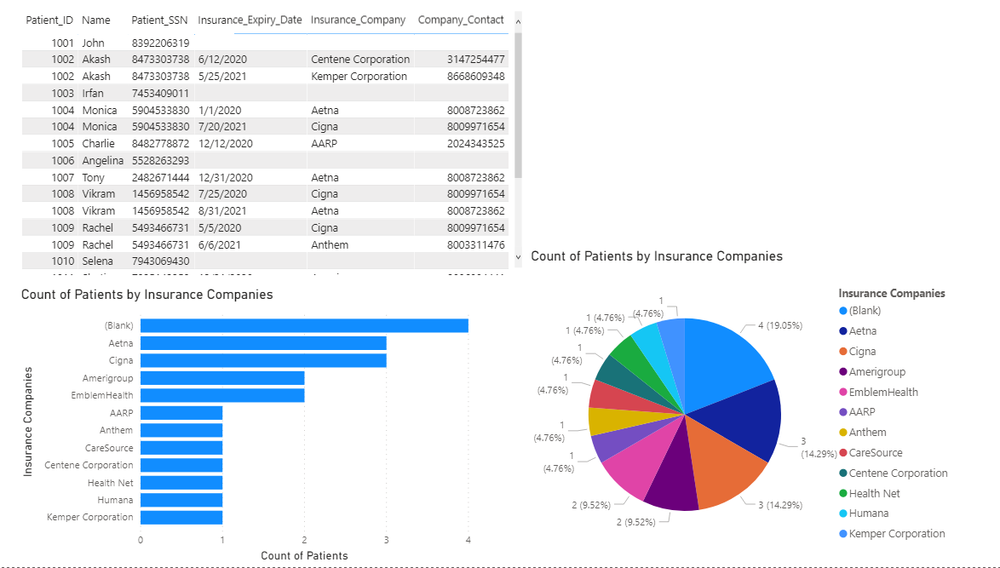
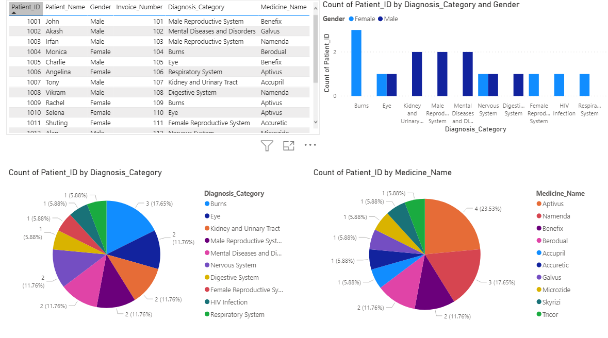

Project Overview
Healthcare center have multiple departments and each of them tend to maintain their own individual system for record maintenance. This architecture of system design leads to inefficient data sharing, lack data consistency, excessive program maintenance etc. In order to eliminate these problems, we have designed a centralised database for Healthcare management system to help healthcare providers collect, store, retrieve and exchange patient healthcare information more efficiently and enable better patient care.
Project Details
- Application Type:Database Design and Management
- Language:TSQL
- Database:Microsoft SQL Server
- Data Visualization Tool :Power BI
- URL:Healthcare Management System